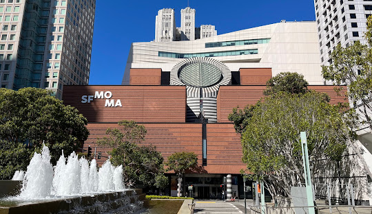

SFMOMA, the San Francisco Museum of Modern Art, is a major art museum known for its extensive collection of modern and contemporary art. Founded in 1935 and expanded in 2016, it features works by artists like Jackson Pollock and Andy Warhol. The museum also offers educational programs and events, making it a vibrant cultural hub in San Francisco.